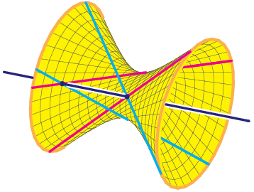

|  |
Enriched Schubert Problems in Lagrangian GrassmanniansFrank SottileC.J. Bott |
|
| The Lagrangian Grassmannian is the set of n-dimensional isotropic linear subspaces in 2n-dimension space equipped with a nondegenerate alternating form (a symplectic vector space). This has dimension n(n-1)/2. It has Schubert subvarieties and a rich Schubert calculus of enumereative geometry. Its Schubert problems turn out to have very rich Galois groups, much more interesting than the ordinary (type A) Grassmannian and flag manifolds. |
The three all have different Galois groups, which are discussed in
| ·· = 4 in LG(4) | Klein 4-group (the essential geometry is the | ||
| Cycle type | Frequency | Fraction | Empirical |
|---|---|---|---|
| 2,2 | 75003 | 0.7500 | 3.0001 |
| 1,1,1,1 | 24997 | 0.2500 | 0.9999 |
| This computed 100000 Frobenius elements | |||
| This took 1465.42 seconds | |||
| ··· = 4 in LG(4) | |||
| Cycle type | Frequency | Fraction | Empirical |
|---|---|---|---|
| 4 | 25018 | 0.2502 | 2.0014 |
| 1,1,2 | 24877 | 0.2488 | 1.9902 |
| 2,2 | 37733 | 0.3773 | 3.0186 |
| 1,1,1,1 | 12372 | 0.1237 | 0.9898 |
| This computed 100000 Frobenius elements | |||
| This took 1979.67 seconds | |||
| ··· = 8 in LG(4) | |||
| Cycle type | Frequency | Fraction | Empirical |
|---|---|---|---|
| 4,4 | 288197682 | 0.3133 | 60.1456 |
| 1,1,3,3 | 153461629 | 0.1668 | 32.0268 |
| 1,1,1,1,2,2 | 85571378 | 0.0930 | 17.8584 |
| 2,6 | 153725480 | 0.1671 | 32.0818 |
| 1,1,2,4 | 115014917 | 0.1250 | 24.0031 |
| 2,2,2,2 | 119414267 | 0.1298 | 24.9212 |
| 1,1,1,1,1,1,1,1 | 4614647 | 0.0050 | 0.9631 |
| This computed 920000000 Frobenius elements | |||
| This took 252.98 Days | |||